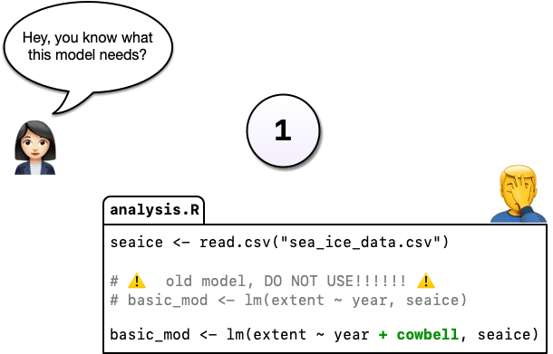
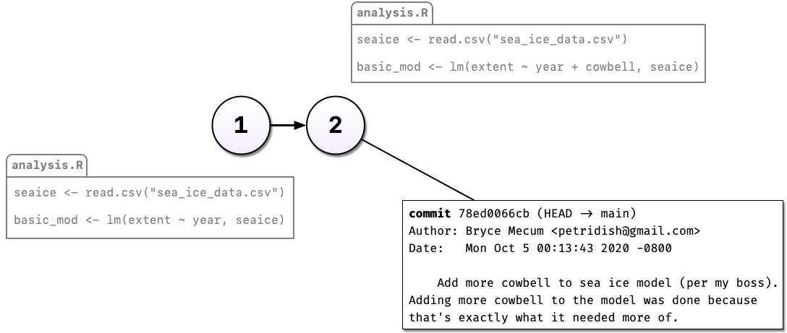
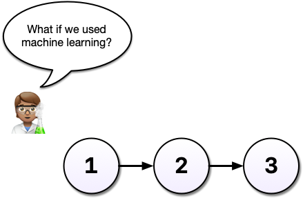
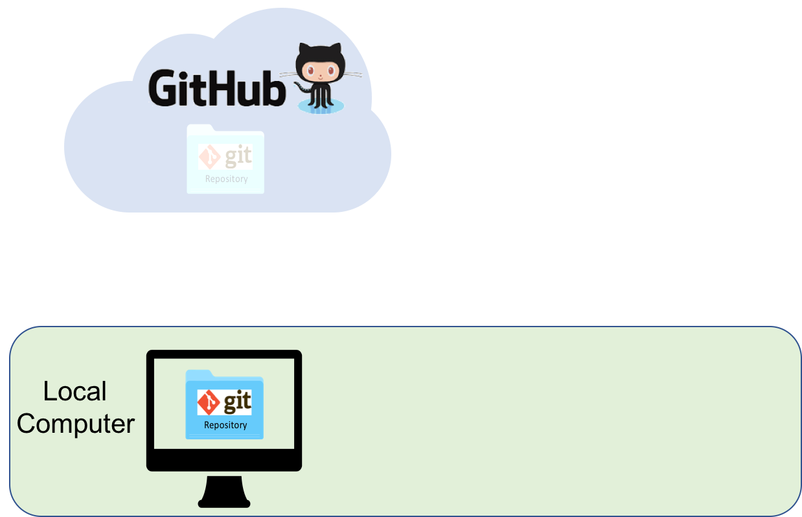
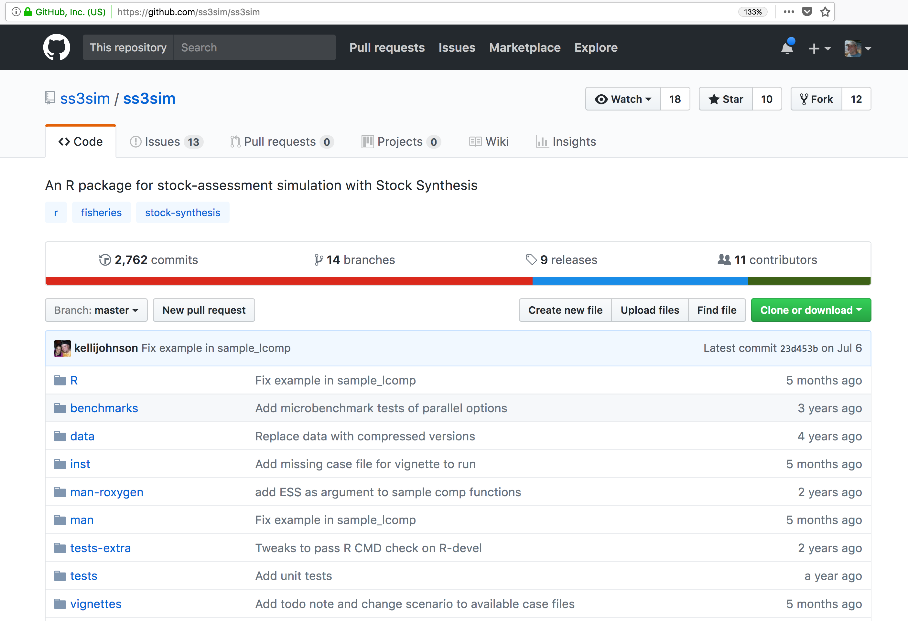
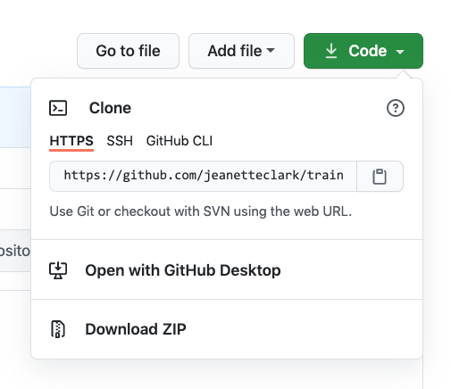
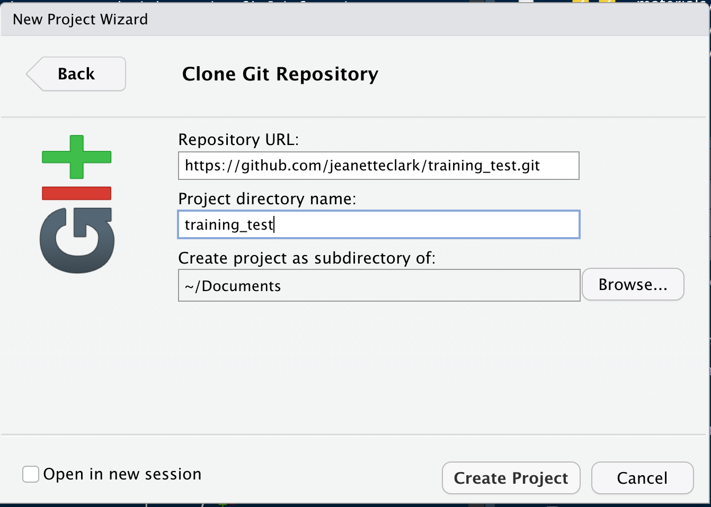
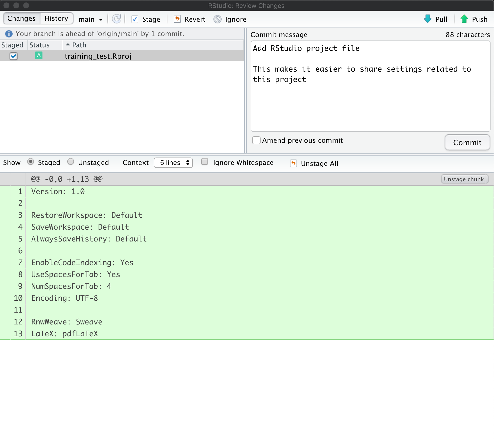
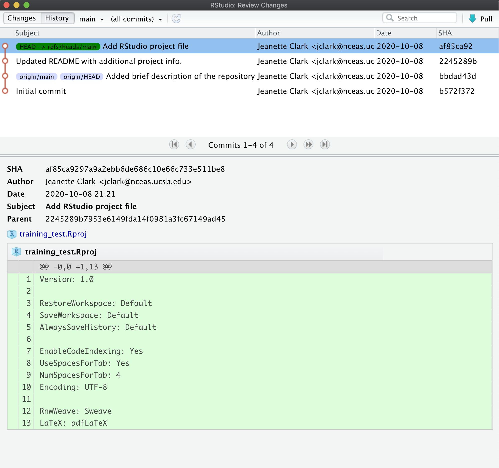
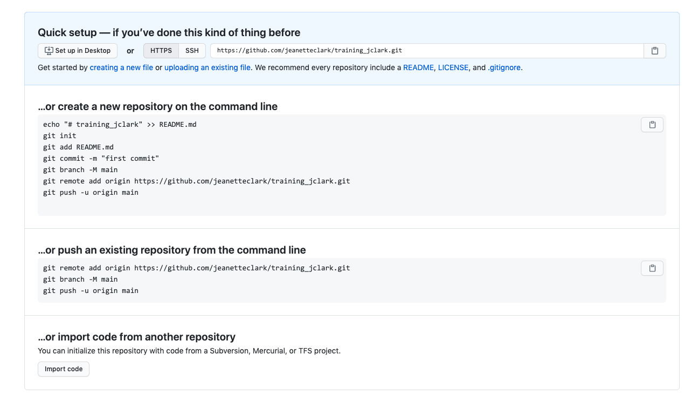

18 Appendix
18.1 Learning Objectives
In this lesson, you will learn:
- Why git is useful for reproducible analysis
- How to use git to track changes to your work over time
- How to use GitHub to collaborate with others
- How to structure your commits so your changes are clear to others
- How to write effective commit messages
18.2 Introduction to git

Every file in the scientific process changes. Manuscripts are edited.
Figures get revised. Code gets fixed when problems are discovered. Data files
get combined together, then errors are fixed, and then they are split and
combined again. In the course of a single analysis, one can expect thousands of
changes to files. And yet, all we use to track this are simplistic filenames.
You might think there is a better way, and you’d be right: version control.
18.2.1 A Motivating Example
Before diving into the details of git and how to use it, let’s start with a motivating example that’s representative of the types of problems git can help us solve.
Say, for example, you’re working on an analysis in R and you’ve got it into a state you’re pretty happy with. We’ll call this version 1:

You come into the office the following day and you have an email from your boss, “Hey, you know what this model needs?”

You’re not entirely sure what she means but you figure there’s only one thing she could be talking about: more cowbell. So you add it to the model in order to really explore the space.
But you’re worried about losing track of the old model so, instead of editing the code in place, you comment out the old code and put as serious a warning as you can muster in a comment above it.

Commenting out code you don’t want to lose is something probably all of us have done at one point or another but it’s really hard to understand why you did this when you come back years later or you when you send your script to a colleague. Luckily, there’s a better way: Version control. Instead of commenting out the old code, we can change the code in place and tell git to commit our change. So now we have two distinct versions of our analysis and we can always see what the previous version(s) look like.

You may have noticed something else in the diagram above: Not only can we save a new version of our analysis, we can also write as much text as we like about the change in the commit message. In addition to the commit message, git also tracks who, when, and where the change was made.
Imagine that some time has gone by and you’ve committed a third version of your analysis, version 3, and a colleague emails with an idea: What if you used machine learning instead?

Maybe you’re not so sure the idea will work out and this is where a tool like git shines.
Without a tool like git, we might copy analysis.R to another file called analysis-ml.R which might end up having mostly the same code except for a few lines.
This isn’t particularly problematic until you want to make a change to a bit of shared code and now you have to make changes in two files, if you even remember to.
Instead, with git, we can start a branch. Branches allow us to confidently experiment on our code, all while leaving the old code in tact and recoverable.

So you’ve been working in a branch and have made a few commits on it and your boss emails again asking you to update the model in some way. If you weren’t using a tool like git, you might panic at this point because you’ve rewritten much of your analysis to use a different method but your boss wants change to the old method.

But with git and branches, we can continue developing our main analysis at the same time as we are working on any experimental branches. Branches are great for experiments but also great for organizing your work generally.

After all that hard work on the machine learning experiment, you and your colleague could decide to scrap it. It’s perfectly fine to leave branches around and switch back to the main line of development but we can also delete them to tidy up.

If, instead, you and your colleague had decided you liked the machine learning experiment, you could also merge the branch with your main development line. Merging branches is analogous to accepting a change in Word’s Track Changes feature but way more powerful and useful.
A key takeaway here is that git can drastically increase your confidence and willingness to make changes to your code and help you avoid problems down the road. Analysis rarely follows a linear path and we need a tool that respects this.

Finally, imagine that, years later, your colleague asks you to make sure the model you reported in a paper you published together was actually the one you used. Another really powerful feature of git is tags which allow us to record a particular state of our analysis with a meaningful name. In this case, we are lucky because we tagged the version of our code we used to run the analysis. Even if we continued to develop beyond commit 5 (above) after we submitted our manuscript, we can always go back and run the analysis as it was in the past.
18.2.1.1 Summary
With git, we can:
- Avoid using cryptic filenames and comments to keep track of our work
- Describe our changes with as much information as we like so it’s easier to understand why our code changed (commits)
- Work on multiple, simultaneous development (branches) of our code at the same time and, optionally, merge them together
- Go back in time to look at (and even run) older versions of our code
- Tag specific versions of our code as meaningful (tags)
And, as we’ll see below, git has one extra superpower available to us: It’s distributed. Multiple people can work on the same analysis at the same time on their own computer and everyone’s changes can eventually merged together.
Version control and Collaboration using Git and GitHub
First, just what are git and GitHub?
- git: version control software used to track files in a folder (a repository)
- git creates the versioned history of a repository
- GitHub: web site that allows users to store their git repositories and share them with others

Let’s look at a GitHub repository
This screen shows the copy of a repository stored on GitHub, with its list of files, when the files and directories were last modified, and some information on who made the most recent changes.

If we drill into the
“commits” for the repository, we can see the history of changes made to all of
the files. Looks like kellijohnson and seananderson were fixing things in
June and July:

And finally, if we drill into the changes made on June 13, we can see exactly what was changed in each file:
 Tracking these changes, how they relate to released versions of software and files
is exactly what Git and GitHub are good for. And we will show how they can really
be effective for tracking versions of scientific code, figures, and manuscripts
to accomplish a reproducible workflow.
Tracking these changes, how they relate to released versions of software and files
is exactly what Git and GitHub are good for. And we will show how they can really
be effective for tracking versions of scientific code, figures, and manuscripts
to accomplish a reproducible workflow.
The Git lifecycle
As a git user, you’ll need to understand the basic concepts associated with versioned sets of changes, and how they are stored and moved across repositories. Any given git repository can be cloned so that it exist both locally, and remotely. But each of these cloned repositories is simply a copy of all of the files and change history for those files, stored in git’s particular format. For our purposes, we can consider a git repository just a folder with a bunch of additional version-related metadata.
In a local git-enabled folder, the folder contains a workspace containing the current version of all files in the repository. These working files are linked to a hidden folder containing the ‘Local repository’, which contains all of the other changes made to the files, along with the version metadata.
So, when working with files using git, you can use git commands to indicate specifically
which changes to the local working files should be staged for versioning
(using the git add command), and when to record those changes as a version in
the local repository (using the command git commit).
The remaining concepts are involved in synchronizing the changes in your local
repository with changes in a remote repository. The git push command is used to
send local changes up to a remote repository (possibly on GitHub), and the git pull
command is used to fetch changes from a remote repository and merge them into the
local repository.

git clone: to copy a whole remote repository to localgit add(stage): notify git to track particular changesgit commit: store those changes as a versiongit pull: merge changes from a remote repository to our local repositorygit push: copy changes from our local repository to a remote repositorygit status: determine the state of all files in the local repositorygit log: print the history of changes in a repository
Those seven commands are the majority of what you need to successfully use git.
But this is all super abstract, so let’s explore with some real examples.
18.3 Create a remote repository on GitHub
Let’s start by creating a repository on GitHub, then we’ll edit some files.
Setup
- Log into GitHub
- Click the New repository button
- Name it
training-test - Create a README.md
- Set the LICENSE to Apache 2.0
- Add a .gitignore file for
R
If you were successful, it should look something like this:
You’ve now created your first repository! It has a couple of files that GitHub created for you, like the README.md file, and the LICENSE file, and the .gitignore file.
For simple changes to text files, you can make edits right in the GitHub web interface.
Challenge
Navigate to the README.md file in the file listing, and edit it by clicking on the pencil icon.
This is a regular Markdown file, so you can just add markdown text. When done, add a commit message, and
hit the Commit changes button.


Congratulations, you’ve now authored your first versioned commit. If you navigate back to the GitHub page for the repository, you’ll see your commit listed there, as well as the rendered README.md file.
Let’s point out a few things about this window. It represents a view of the repository that you created, showing all of the files in the repository so far. For each file, it shows when the file was last modified, and the commit message that was used to last change each file. This is why it is important to write good, descriptive commit messages. In addition, the blue header above the file listing shows the most recent commit, along with its commit message, and its SHA identifier. That SHA identifier is the key to this set of versioned changes. If you click on the SHA identifier (810f314), it will display the set of changes made in that particular commit.
In the next section we’ll use the GitHub URL for the GitHub repository you created
to clone the repository onto your local machine so that you can edit the files
in RStudio. To do so, start by copying the GitHub URL, which represents the repository
location:

18.4 Working locally with Git via RStudio
For convenience, it would be nice to be able to edit the files locally on our
computer using RStudio rather than working on the GitHub website. We can do this
by using the clone command to copy the repository from GitHub to our local computer,
which then allows us to push changes up to GitHub and pull down any changes that
have occurred.

We refer to the remote copy of the repository that is on GitHub as the origin
repository (the one that we cloned from), and the copy on our local computer as
the local copy.
RStudio knows how to work with files under version control with Git, but only if you are working within an RStudio project folder. In this next section, we will clone the repository that you created on GitHub into a local repository as an RStudio project. Here’s what we’re going to do:
- Create the new project
- Inspect the Git tab and version history
- Commit a change to the README.md file
- Commit the changes that RStudio made
- Inspect the version history
- Add and commit an Rmd file
- Push these changes to GitHub
- View the change history on GitHub
Setup
In the File menu, select “New Project.” In the dialog that pops up, select the “Version Control” option, and paste the GitHub URL that you copied into the field for the remote repository Repository URL. While you can name the local copy of the repository anything, it’s typical to use the same name as the GitHub repository to maintain the correspondence.

Once you hit `Create Project, a new RStudio window will open with all of the files from the remote repository copied locally. Depending on how your version of RStudio is configured, the location and size of the panes may differ, but they should all be present, including a Git tab and the normal Files tab listing the files that had been created in the remote repository.
You’ll note that there is one new file training-test.Rproj, and three files that we
created earlier on GitHub (.gitignore, LICENSE, and README.md).
In the Git tab, you’ll note that two files are listed. This is the status pane
that shows the current modification status of all of the files in the repository.
In this case, the .gitignore file is listed as M for Modified, and training-test.Rproj
is listed with a ? ? to indicate that the file is untracked. This means that
git has not stored any versions of this file, and knows nothing about the file.
As you make version control decisions in RStudio, these icons will change to reflect
the current version status of each of the files.
Inspect the history. For now, let’s click on the History button in the Git tab, which will show the log of changes that occurred, and will be identical to what we viewed on GitHub. By clicking on each row of the history, you can see exactly what was added and changed in each of the two commits in this repository.

Challenge
Commit a README.md change. Next let’s make a change to the README.md file, this time from RStudio.
Add a new section to your markdown using a header, and under it include a list three advantages to using git.
Once you save, you’ll immediately see the README.md file show up in the Git tab, marked as a modification. You can select the file in the Git tab, and click Diff to see the differences that you saved (but which are not yet committed to your local repository).
And here’s what the newly made changes look like compared to the original file. New lines are highlighted in green, while removed lines are in red.
Commit the RStudio changes.
To commit the changes you made to the README.md file, check the Staged checkbox next to the file (which tells Git which changes you want included in the commit), then provide a descriptive Commit message, and then click Commit.

Note that some of the changes in the repository, namely training-test.Rproj are still listed as having not been committed. This means
there are still pending changes to the repository. You can also see the note
that says:
Your branch is ahead of ‘origin/main’ by 1 commit.
This means that we have committed 1 change in the local repository, but that
commit has not yet been pushed up to the origin repository, where origin
is the typical name for our remote repository on GitHub. So, let’s commit the
remaining project files by staging them and adding a commit message.

When finished, you’ll see that no changes remain in the Git tab, and the repository is clean.
Inspect the history. Note that the message now says:
Your branch is ahead of ‘origin/main’ by 2 commits.
These 2 commits are the two we just made, and have not yet been pushed to GitHub. By clicking on the History button, we can see that there are now a total of four commits in the local repository (while there had only been two on GitHub).

Push these changes to GitHub. Now that everything has been changed as desired locally, you can push the changes to GitHub using the Push button. This will prompt you for your GitHub username and password, and upload the changes, leaving your repository in a totally clean and synchronized state. When finished, looking at the history shows all four commits, including the two that were done on GitHub and the two that were done locally on RStudio.

And note that the labels indicate that both the local repository (HEAD) and the
remote repository (origin/HEAD) are pointing at the same version in the history.
So, if we go look at the commit history on GitHub, all the commits will be shown
there as well.

Aside
What should I write in my commit message?
Clearly, good documentation of what you’ve done is critical to making the version history of your repository meaningful and helpful. Its tempting to skip the commit message altogether, or to add some stock blurb like ‘Updates’. It’s better to use messages that will be helpful to your future self in deducing not just what you did, but why you did it. Also, commit messaged are best understood if they follow the active verb convention. For example, you can see that my commit messages all started with a past tense verb, and then explained what was changed.
While some of the changes we illustrated here were simple and so easily explained in a short phrase, for more complex changes, its best to provide a more complete message. The convention, however, is to always have a short, terse first sentence, followed by a more verbose explanation of the details and rationale for the change. This keeps the high level details readable in the version log. I can’t count the number of times I’ve looked at the commit log from 2, 3, or 10 years prior and been so grateful for diligence of my past self and collaborators.
Collaboration and conflict free workflows
Up to now, we have been focused on using Git and GitHub for yourself, which is a great use. But equally powerful is to share a GitHub repository with other researchers so that you can work on code, analyses, and models together. When working together, you will need to pay careful attention to the state of the remote repository to avoid and handle merge conflicts. A merge conflict occurs when two collaborators make two separate commits that change the same lines of the same file. When this happens, git can’t merge the changes together automatically, and will give you back an error asking you to resolve the conflict. Don’t be afraid of merge conflicts, they are pretty easy to handle. and there are some great guides.
That said, its truly painless if you can avoid merge conflicts in the first place. You can minimize conflicts by:
- Ensure that you pull down changes just before you commit
- Ensures that you have the most recent changes
- But you may have to fix your code if conflict would have occurred
- Coordinate with your collaborators on who is touching which files
- You still need to communicate to collaborate
18.5 Setting up git on an existing project
Now you have two projects set up in your RStudio environment, training_{USERNAME} and training_test. We set you up with the training_test project since we think it is an easy way to introduce you to git, but more commonly researchers will have an existing directory of code that they then want to make a git repository out of. For the last exercise of this session, we will do this with your training_{USERNAME} project.
First, switch to your training_{USERNAME} project using the RStudio project switcher. The project switcher is in the upper right corner of your RStudio pane. Click the dropdown next to your project name (training_test), and then select the training_{USERNAME} project from the “recent projects” list.

Next, from the Tools menu, select “Project Options.” In the dialog that pops up, select “Git/SVN” from the menu on the left. In the dropdown at the top of this page, select “Git” and click “Yes” in the confirmation box. Click “Yes” again to restart RStudio.
When RStudio restarts, you should have a git tab, with two untracked files (.gitignore and training_{USERNAME}.Rproj).
Now we have your local repository all set up. You can make as many commits as you want on this repository, and it will likely still be helpful to you, but the power in git and GitHub is really in collaboration. As discussed, GitHub facilitates this, so let’s get this repository on GitHub.
Go back to GitHub, and click on the “New Repository” button.
In the repository name field, enter the same name as your RProject. So for me, this would be training_jclark. Add a description, keep the repository public, and, most importantly:
DO NOT INITIALIZE THE REPOSITORY WITH ANY FILES.
We already have the repository set up locally so we don’t need to do this. Initializing the repository will only cause merge issues.
Here is what your page should look like:

Once your page looks like that, click the “create repository” button.
This will open your empty repository with a page that conveniently gives you exactly the instructions you need. In our case, we are “pushing an existing repository from the command line.”

Click the clipboard icon to copy the code for the middle option of the three on this page. It should have three lines and look like this:
git remote add origin https://github.com/jeanetteclark/training_jclark.git
git branch -M main
git push -u origin mainBack in RStudio, open the terminal by clicking the tab labeled as such next to the console tab. The prompt should look something like this:
jclark@included-crab:~/training_jclark$In the prompt, paste the code that you copied from the GitHub page and press return. You will be prompted to type your GitHub username and password.
The code that you copied and pasted did three things:
- added the GitHub repository as the remote repository
- renamed the default branch to
main - pushed the
mainbranch to the remote GitHub repository
If you go back to your browser and refresh your GitHub repository page, you should now see your files appear.
Challenge
On your repository page, GitHub has a button that will help you add a readme file. Click the “Add a README” button and use markdown syntax to create a simple readme. Commit the changes to your repository.
Go to your local repository (in RStudio) and pull the changes you made.
18.6 Go Further
There’s a lot we haven’t covered in this brief tutorial. There are some great and much longer tutorials that cover advanced topics, such as:
Using git on the command line
Resolving conflicts
Branching and merging
Pull requests versus direct contributions for collaboration
Using .gitignore to protect sensitive data
GitHub Issues and why they are useful
and much, much more
Try Git is a great interactive tutorial
Software Carpentry Version Control with Git
Codecademy Learn Git (some paid)
18.7 Learning Objectives
In this lesson, you will learn:
- How to use Git and GitHub to collaborate with colleagues on code
- What typically causes conflicts when collaborating
- Workflows to avoid conflicts
- How to resolve a conflict
18.8 Introduction
Git is a great tool for working on your own, but even better for working with friends and colleagues. Git allows you to work with confidence on your own local copy of files with the confidence that you will be able to successfully synchronize your changes with the changes made by others.
The simplest way to collaborate with Git is to use a shared repository on a hosting service such as GitHub, and use this shared repository as the mechanism to move changes from one collaborator to another. While there are other more advanced ways to sync git repositories, this “hub and spoke” model works really well due to its simplicity.
In this model, the collaborator will clone a copy of the owner’s repository from
GitHub, and the owner will grant them collaborator status, enabling the collaborator
to directly pull and push from the owner’s GitHub repository.

18.9 Collaborating with a trusted colleague without conflicts
We start by enabling collaboration with a trusted colleague. We will designate the Owner as the person who owns the shared repository, and the Collaborator as the person that they wish to grant the ability to make changes to their repository. We start by giving that person access to our GitHub repository.
Setup
- We will break you into pairs, so choose one person as the
Ownerand one as theCollaborator - Log into GitHub as the `Owner
- Navigate to the
Owner’s training repository (e.g.,training_jones)
Then, have the Owner visit their training repository created earlier, and visit the Settings page, and select the Manage access screen, and add the username of your Collaborator in the box.

Once the collaborator has been added, they should check their email for an invitation from GitHub, and click on the acceptance link, which will enable them to collaborate on the repository.
We will start by having the collaborator make some changes and share those with the Owner without generating any conflicts, In an ideal world, this would be the normal workflow. Here are the typical steps.
18.9.1 Step 1: Collaborator clone
To be able to contribute to a repository, the collaborator must clone the repository from the Owner’s github account. To do this, the Collaborator should visit the github page for the Owner’s repository, and then copy the clone URL. In R Studio, the Collaborator will create a new project from version control by pasting this clone URL into the appropriate dialog (see the earlier chapter introducing GitHub).
18.9.2 Step 2: Collaborator Edits
With a clone copied locally, the Collaborator can now make changes to the
index.Rmd file in the repository, adding a line or statement somewhere noticeable near the top. Save your changes.
18.9.3 Step 3: Collaborator commit and push
To sync changes, the collaborator will need to add, commit, and
push their changes to the Owner’s repository. But before doing so, it’s good practice to pull immediately before committing to ensure you have the most recent changes from the owner. So, in R Studio’s Git tab, first click the “Diff” button to open the git window, and then press the green “Pull” down arrow button. This will fetch any recent changes from the origin repository and merge them. Next, add the changed index.Rmd file to be committed by clicking the checkbox next to it, type in a commit message, and click ‘Commit.’ Once that finishes, then the collaborator can immediately click ‘Push’ to send the commits to the Owner’s GitHub repository.

18.9.4 Step 4: Owner pull
Now, the owner can open their local working copy of the code
in RStudio, and pull those changes down to their local copy.
Congrats, the owner now has your changes!
18.9.5 Step 5: Owner edits, commit, and push
Next, the owner should do the same. Make changes to
a file in the repository, save it, pull to make sure no new changes have been made
while editing, and then add, commit, and push the Owner changes to GitHub.
18.9.6 Step 6: Collaborator pull
The collaborator can now pull down those owner changes,
and all copies are once again fully synced. And you’re off to collaborating.
Challenge
Now that the instructors have demonstrated this conflict-free process, break into
pairs and try the same with your partner. Start by designating one person as the Owner and one as the Collborator, and then repeat the steps described above:
- Step 0: Setup permissions for your collaborator
- Step 1: Collaborator clones the Owner repository
- Step 2: Collaborator Edits the README file
- Step 3: Collaborator commits and pushes the file to GitHub
- Step 4: Owner pulls the changes that the Collaborator made
- Step 5: Owner edits, commits, and pushes some new changes
- Step 6: Collaborator pulls the owners changes from GitHub

18.10 Merge conflicts
So things can go wrong, which usually starts with a merge conflict, due to both collaborators making incompatible changes to a file. While the error messages from merge conflicts can be daunting, getting things back to a normal state can be straightforward once you’ve got an idea where the problem lies.
A merge conflict occurs when both the owner and collaborator change the same lines in the same file without first pulling the changes that the other has made. This is most easily avoided by good communication about who is working on various sections of each file, and trying to avoid overlaps. But sometimes it happens, and git is there to warn you about potential problems. And git will not allow you to overwrite one person’s changes to a file with another’s changes to the same file if they were based on the same version.

The main problem with merge conflicts is that, when the Owner and Collaborator both make changes to the same line of a file, git doesn’t know whose changes take precedence. You have to tell git whose changes to use for that line.
18.11 How to resolve a conflict
Abort, abort, abort…
Sometimes you just made a mistake. When you get a merge conflict, the repository is placed in a ‘Merging’ state until you resolve it. There’s a commandline command to abort doing the merge altogether:
git merge --abortOf course, after doing that you still haven’t synced with your collaborator’s changes, so things are still unresolved. But at least your repository is now usable on your local machine.
Checkout
The simplest way to resolve a conflict, given that you know whose version of the
file you want to keep, is to use the commandline git program to tell git to
use either your changes (the person doing the merge), or their changes (the other collaborator).
- keep your collaborators file:
git checkout --theirs conflicted_file.Rmd - keep your own file:
git checkout --ours conflicted_file.Rmd
Once you have run that command, then run add, commit, and push the changes as normal.
Pull and edit the file
But that requires the commandline. If you want to resolve from RStudio, or if
you want to pick and choose some of your changes and some of your collaborator’s,
then instead you can manually edit and fix the file. When you pulled the file
with a conflict, git notices that there is a conflict and modifies the file to show
both your own changes and your collaborator’s changes in the file. It also shows the
file in the Git tab with an orange U icon, which indicates that the file is Unmerged,
and therefore awaiting you help to resolve the conflict. It delimits
these blocks with a series of less than and greater than signs, so they are easy to find:

To resolve the conficts, simply find all of these blocks, and edit them so that
the file looks how you want (either pick your lines, your collaborators lines,
some combination, or something altogether new), and save. Be sure you removed the
delimiter lines that started with <<<<<<<, =======, and >>>>>>>.
Once you have made those changes, you simply add, commit, and push the files to resolve the conflict.
18.11.1 Producing and resolving merge conflicts
To illustrate this process, we’re going to carefully create a merge conflict step by step, show how to resolve it, and show how to see the results of the successful merge after it is complete. First, we will walk through the exercise to demonstrate the issues.
18.11.1.1 Owner and collaborator ensure all changes are updated
First, start the exercise by ensuring that both the Owner and Collaborator have all
of the changes synced to their local copies of the Owner’s repository in RStudio.
This includes doing a git pull to ensure that you have all changes local, and
make sure that the Git tab in RStudio doesn’t show any changes needing to be committed.
18.11.1.2 Owner makes a change and commits
From that clean slate, the Owner first modifies and commits a small change including their name on a specific line of the README.md file (we will change line 4). Work to only change that one line, and add your username to the line in some form and commit the changes (but DO NOT push). We are now in a situation where the owner has unpushed changes that the collaborator can not yet see.
18.11.1.3 Collaborator makes a change and commits on the same line
Now the collaborator also makes changes to the same (line 4) of the README.md file in their RStudio copy of the project, adding their name to the line. They then commit. At this point, both the owner and collaborator have committed changes based on their shared version of the README.md file, but neither has tried to share their changes via GitHub.
18.11.1.4 Collaborator pushes the file to GitHub
Sharing starts when the Collaborator pushes their changes to the GitHub repo, which updates GitHub to their version of the file. The owner is now one revision behind, but doesn’t yet know it.
18.11.1.5 Owner pushes their changes and gets an error
At this point, the owner tries to push their change to the repository, which triggers an error from GitHub. While the error message is long, it basically tells you everything needed (that the owner’s repository doesn’t reflect the changes on GitHub, and that they need to pull before they can push).

18.11.1.6 Owner pulls from GitHub to get Collaborator changes
Doing what the message says, the Owner pulls the changes from GitHub, and gets another, different error message. In this case, it indicates that there is a merge conflict because of the conflicting lines.

In the Git pane of RStudio, the file is also flagged with an orange ‘U’, which stands for an unresolved merge conflict.

18.11.1.7 Owner edits the file to resolve the conflict
To resolve the conflict, the Owner now needs to edit the file. Again, as indicated above,
git has flagged the locations in the file where a conflict occurred
with <<<<<<<, =======, and >>>>>>>. The Owner should edit the file, merging whatever
changes are appropriate until the conflicting lines read how they should, and eliminate
all of the marker lines with with <<<<<<<, =======, and >>>>>>>.

Of course, for scripts and programs, resolving the changes means more than just merging the text – whoever is doing the merging should make sure that the code runs properly and none of the logic of the program has been broken.

18.11.1.8 Owner commits the resolved changes
From this point forward, things proceed as normal. The owner first ‘Adds’ the file
changes to be made, which changes the orange U to a blue M for modified, and then
commits the changes locally. The owner now has a resolved version of the file on their
system.

18.11.1.9 Owner pushes the resolved changes to GitHub
Have the Owner push the changes, and it should replicate the changes to GitHub without error.


Merge Conflict Challenge
Now it’s your turn. In pairs, intentionally create a merge conflict, and then go through the steps needed to resolve the issues and continue developing with the merged files. See the sections above for help with each of these steps:
- Step 0: Owner and collaborator ensure all changes are updated
- Step 1: Owner makes a change and commits
- Step 2: Collaborator makes a change and commits on the same line
- Step 3: Collaborator pushes the file to GitHub
- Step 4: Owner pushes their changes and gets an error
- Step 5: Owner pulls from GitHub to get Collaborator changes
- Step 6: Owner edits the file to resolve the conflict
- Step 7: Owner commits the resolved changes
- Step 8: Owner pushes the resolved changes to GitHub
- Step 9: Collaborator pulls the resolved changes from GitHub
- Step 10: Both can view commit history
18.12 Workflows to avoid merge conflicts
Some basic rules of thumb can avoid the vast majority of merge conflicts, saving a lot of time and frustration. These are words our teams live by:
- Communicate often
- Tell each other what you are working on
- Pull immediately before you commit or push
- Commit often in small chunks.
A good workflow is encapsulated as follows:
Pull -> Edit -> Add -> Pull -> Commit -> Push
Always start your working sessions with a pull to get any outstanding changes, then start doing your editing and work. Stage your changes, but before you commit, Pull again to see if any new changes have arrived. If so, they should merge in easily if you are working in different parts of the program. You can then Commit and immediately Push your changes safely. Good luck, and try to not get frustrated. Once you figure out how to handle merge conflicts, they can be avoided or dispatched when they occur, but it does take a bit of practice.
18.13 Introduction
Regular expressions are a fantastic tool for filtering and even extracting information out of strings of characters such as site codes, titles, or even entire documents. Regular expressions follow a custom syntax that we’ll need to learn but they are worth learning because:
- Regular expressions can do things other methods cannot
- Regular expressions can be used with many other languages and tools so it’s a learn-once, use-everywhere kind of tool
But they’re something that you only need to learn a bit of to get a lot of value out of them. I often use fairly simple regular expressions, like the ones we used on the command line,
ls *.Rmd18.14 Learning Outcomes
Students should:
- Understand when regular expressions are appropriate
- Have an introductory-level awareness of regular expression syntax
- Have some experience executing and working with regular expressions in R
18.15 Lesson
Earlier this week, we used some simple regular expression on the command line (terminal). The same type of operations we used on the command line work in R:
getwd() # Like pwd()## [1] "/Users/runner/work/repro-research-course/repro-research-course/materials/sections"dir() # Like `ls()`## [1] "_references.Rmd"
## [2] "adc-creating-data-portals.Rmd"
## [3] "adc-intro-to-policies.Rmd"
## [4] "bayesian-implementation.Rmd"
## [5] "bayesian-intro.Rmd"
## [6] "closing-materials.Rmd"
## [7] "collaboration-common-challenges.Rmd"
## [8] "collaboration-maximizing-potential.Rmd"
## [9] "collaboration-meeting-facilitation.Rmd"
## [10] "collaboration-social-data-policies.Rmd"
## [11] "collaboration-thinking-preferences-in-person.Rmd"
## [12] "collaboration-thinking-preferences-short.Rmd"
## [13] "collaboration-thinking-preferences-small-group.Rmd"
## [14] "collaboration-thinking-preferences.Rmd"
## [15] "commandline-intro.Rmd"
## [16] "communication.Rmd"
## [17] "community-data-resources.Rmd"
## [18] "community-data.Rmd"
## [19] "d1-creating-data-portals.Rmd"
## [20] "data-cleaning-manipulation-tidyverse.Rmd"
## [21] "data-cleaning-tidyverse-socialsci.Rmd"
## [22] "data-ethics-resources.Rmd"
## [23] "data-ethics-socialsci.Rmd"
## [24] "data-ethics.Rmd"
## [25] "data-identifers-contentid.Rmd"
## [26] "data-management-plans-reduced.Rmd"
## [27] "data-management-plans.Rmd"
## [28] "data-modeling-socialsci.Rmd"
## [29] "data-modeling.Rmd"
## [30] "data-netcdf-intro.Rmd"
## [31] "data-publishing-part-two-socialsci.Rmd"
## [32] "exercise-data-cleaning-manipulation-tidyverse.Rmd"
## [33] "exercise-intro-programming-socialsci.Rmd"
## [34] "exercise-tidyverse-socialsci.Rmd"
## [35] "geospatial-vector-analysis.Rmd"
## [36] "git-collaboration-conflicts.Rmd"
## [37] "git-github-publishing-analysis.Rmd"
## [38] "git-intro.Rmd"
## [39] "git-pull-requests-branches.Rmd"
## [40] "human-subjects-considerations.Rmd"
## [41] "inro-reproducibility.Rmd"
## [42] "logic-modeling.Rmd"
## [43] "meta-analysis-interpretation.Rmd"
## [44] "meta-analysis-r.Rmd"
## [45] "metadata-adc-data-documentation-hands-on.Rmd"
## [46] "metadata-adc-data-documentation-socialsci.Rmd"
## [47] "metadata-data-best-practices-intro.Rmd"
## [48] "metadata-knb-data-documentation-hands-on.Rmd"
## [49] "metadata-programming-publishing.Rmd"
## [50] "model-analysis.Rmd"
## [51] "parallel-computing-in-r.Rmd"
## [52] "provenance-reproducibility-datapaper.Rmd"
## [53] "quantitative-synthesis-tools.Rmd"
## [54] "r-beginning-programming.Rmd"
## [55] "r-creating-functions.Rmd"
## [56] "r-creating-packages.Rmd"
## [57] "r-intro-rstudio-git-setup-motivation.Rmd"
## [58] "r-introduction-to-rmarkdown.Rmd"
## [59] "regular-expressions.Rmd"
## [60] "research-reproducibility_complete.Rmd"
## [61] "research-reproducibility.bib"
## [62] "research-reproducibility.Rmd"
## [63] "survey-workflows.Rmd"
## [64] "synthesis-questions.Rmd"
## [65] "synthesis-workflow-reporting.Rmd"
## [66] "text-analysis.Rmd"
## [67] "time-series-forecasting.Rmd"
## [68] "visualisation-ggplot-leaflet.Rmd"
## [69] "visualisation-shiny.Rmd"
## [70] "visualization-ggplot-socialsci.Rmd"
## [71] "workflows-and-continuous-integration.Rmd"library(stringr)
str_view_all(dir(), ".*Rmd")## Warning: `str_view()` was deprecated in stringr 1.5.0.
## ℹ Please use `str_view_all()` instead.## [1] │ <_references.Rmd>
## [2] │ <adc-creating-data-portals.Rmd>
## [3] │ <adc-intro-to-policies.Rmd>
## [4] │ <bayesian-implementation.Rmd>
## [5] │ <bayesian-intro.Rmd>
## [6] │ <closing-materials.Rmd>
## [7] │ <collaboration-common-challenges.Rmd>
## [8] │ <collaboration-maximizing-potential.Rmd>
## [9] │ <collaboration-meeting-facilitation.Rmd>
## [10] │ <collaboration-social-data-policies.Rmd>
## [11] │ <collaboration-thinking-preferences-in-person.Rmd>
## [12] │ <collaboration-thinking-preferences-short.Rmd>
## [13] │ <collaboration-thinking-preferences-small-group.Rmd>
## [14] │ <collaboration-thinking-preferences.Rmd>
## [15] │ <commandline-intro.Rmd>
## [16] │ <communication.Rmd>
## [17] │ <community-data-resources.Rmd>
## [18] │ <community-data.Rmd>
## [19] │ <d1-creating-data-portals.Rmd>
## [20] │ <data-cleaning-manipulation-tidyverse.Rmd>
## ... and 51 morestr_view_all(dir(), ".*html")## [1] │ _references.Rmd
## [2] │ adc-creating-data-portals.Rmd
## [3] │ adc-intro-to-policies.Rmd
## [4] │ bayesian-implementation.Rmd
## [5] │ bayesian-intro.Rmd
## [6] │ closing-materials.Rmd
## [7] │ collaboration-common-challenges.Rmd
## [8] │ collaboration-maximizing-potential.Rmd
## [9] │ collaboration-meeting-facilitation.Rmd
## [10] │ collaboration-social-data-policies.Rmd
## [11] │ collaboration-thinking-preferences-in-person.Rmd
## [12] │ collaboration-thinking-preferences-short.Rmd
## [13] │ collaboration-thinking-preferences-small-group.Rmd
## [14] │ collaboration-thinking-preferences.Rmd
## [15] │ commandline-intro.Rmd
## [16] │ communication.Rmd
## [17] │ community-data-resources.Rmd
## [18] │ community-data.Rmd
## [19] │ d1-creating-data-portals.Rmd
## [20] │ data-cleaning-manipulation-tidyverse.Rmd
## ... and 51 moreLet’s start off with a simple example of where simpler methods won’t work and see how regular expressions can be used to get what we need done. Let’s say we just received some data we need to analyze and we find this:
site_data <- read.csv("../data/site_data.csv", stringsAsFactors = FALSE)
site_data## x temp_c
## 1 2000-copany bay-2 9.247435
## 2 2001-choctawhatchee bay-2 29.170777
## 3 2002-aransas bay-3 62.351057
## 4 2003-choctawhatchee bay-4 89.888624
## 5 2004-choctawhatchee bay-4 96.958163
## 6 2005-choctawhatchee bay-2 49.894849
## 7 2006-choctawhatchee bay-4 53.401312
## 8 2007-galveston bay-2 54.335877
## 9 2008-choctawhatchee bay-1 7.279786
## 10 2009-copany bay-3 8.806454
## 11 2000-choctawhatchee bay-2 21.353557
## 12 2001-copany bay-1 3.229220
## 13 2002-galveston bay-4 71.312880
## 14 2003-choctawhatchee bay-4 42.640502
## 15 2004-copany bay-1 92.070634
## 16 2005-galveston bay-1 95.573717
## 17 2006-choctawhatchee bay-3 99.215221
## 18 2007-copany bay-1 80.570198
## 19 2008-galveston bay-1 98.582018
## 20 2009-galveston bay-2 46.406132
## 21 2000-galveston bay-1 39.235548
## 22 2001-choctawhatchee bay-2 95.831200
## 23 2002-copany bay-1 49.300697
## 24 2003-copany bay-3 29.875656
## 25 2004-copany bay-1 58.682873
## 26 2005-copany bay-1 19.943774
## 27 2006-galveston bay-4 55.101811
## 28 2007-galveston bay-4 77.270760
## 29 2008-copany bay-2 25.395214
## 30 2009-galveston bay-4 51.966997
## 31 2000-choctawhatchee bay-4 83.095610
## 32 2001-copany bay-2 40.698851
## 33 2002-galveston bay-3 24.973809
## 34 2003-choctawhatchee bay-1 44.232596
## 35 2004-galveston bay-3 59.023020
## 36 2005-choctawhatchee bay-4 59.439810
## 37 2006-copany bay-3 63.713113
## 38 2007-copany bay-1 63.446845
## 39 2008-choctawhatchee bay-2 12.215281
## 40 2009-galveston bay-4 24.810948It looks like the author of the dataset mixed the year of measurements, site code (e.g., A, CCCC, etc.), and some sub-site code (e.g., 1, 2, 3, etc.) into a single column.
If we wanted to, for example, calculate mean temperature by site, we’d need to split these up somehow into separate columns.
How could we go about this?
We could start with substr which lets us slice a string by its indices:
substr(site_data$x, 1, 4)## [1] "2000" "2001" "2002" "2003" "2004" "2005" "2006" "2007" "2008" "2009"
## [11] "2000" "2001" "2002" "2003" "2004" "2005" "2006" "2007" "2008" "2009"
## [21] "2000" "2001" "2002" "2003" "2004" "2005" "2006" "2007" "2008" "2009"
## [31] "2000" "2001" "2002" "2003" "2004" "2005" "2006" "2007" "2008" "2009"substr(site_data$x, 5, 16)## [1] "-copany bay-" "-choctawhatc" "-aransas bay" "-choctawhatc" "-choctawhatc"
## [6] "-choctawhatc" "-choctawhatc" "-galveston b" "-choctawhatc" "-copany bay-"
## [11] "-choctawhatc" "-copany bay-" "-galveston b" "-choctawhatc" "-copany bay-"
## [16] "-galveston b" "-choctawhatc" "-copany bay-" "-galveston b" "-galveston b"
## [21] "-galveston b" "-choctawhatc" "-copany bay-" "-copany bay-" "-copany bay-"
## [26] "-copany bay-" "-galveston b" "-galveston b" "-copany bay-" "-galveston b"
## [31] "-choctawhatc" "-copany bay-" "-galveston b" "-choctawhatc" "-galveston b"
## [36] "-choctawhatc" "-copany bay-" "-copany bay-" "-choctawhatc" "-galveston b"But we’d quickly find that, because the number of characters in the site code varies from one to four, we can’t extract just the site code. These are the types of problems where regular expressions come in handy.
Before we start, we’re going to use the str_view_all function from the stringr package which shows a nice display of the result of executing a regular expression against our strings.
In real use, we would use another function to actually get and work with the result.
library(stringr)
str_view_all(site_data$x, "[a-z ]+")## [1] │ 2000-<copany bay>-2
## [2] │ 2001-<choctawhatchee bay>-2
## [3] │ 2002-<aransas bay>-3
## [4] │ 2003-<choctawhatchee bay>-4
## [5] │ 2004-<choctawhatchee bay>-4
## [6] │ 2005-<choctawhatchee bay>-2
## [7] │ 2006-<choctawhatchee bay>-4
## [8] │ 2007-<galveston bay>-2
## [9] │ 2008-<choctawhatchee bay>-1
## [10] │ 2009-<copany bay>-3
## [11] │ 2000-<choctawhatchee bay>-2
## [12] │ 2001-<copany bay>-1
## [13] │ 2002-<galveston bay>-4
## [14] │ 2003-<choctawhatchee bay>-4
## [15] │ 2004-<copany bay>-1
## [16] │ 2005-<galveston bay>-1
## [17] │ 2006-<choctawhatchee bay>-3
## [18] │ 2007-<copany bay>-1
## [19] │ 2008-<galveston bay>-1
## [20] │ 2009-<galveston bay>-2
## ... and 20 moreThe expression we used above, [a-z ]+, is equivalent to asking for the first consecutive run of the letters a-z or ” ” (a space) in the entire string of characters.
This is the type of problem regular expression were created for!
18.16 Overview of Regular Expressions
Regular expressions can match things literally, e.g.,
str_detect("grouper", "striper")## [1] FALSEstr_detect("grouper", "grouper")## [1] TRUEbut they also support a large set of special characters:
.: Match any character
fish <- c("grouper", "striper", "sheepshead")
str_view_all(fish, ".p")## [1] │ gro<up>er
## [2] │ str<ip>er
## [3] │ she<ep>sheadIf you actually want to match a period and not any character, you have to do what’s called escaping:
fish <- c("stripers", "striper.", "grouper")
str_view_all(fish, "striper\\.")## [1] │ stripers
## [2] │ <striper.>
## [3] │ grouperSee how that regular expression only matched the striper with the period at the end and not the string stripers?
[]: Match any character in this set
fish <- c("grouper", "striper", "sheepshead")
str_view_all(fish, "[aeiou]")## [1] │ gr<o><u>p<e>r
## [2] │ str<i>p<e>r
## [3] │ sh<e><e>psh<e><a>d[^]: Match any character not in this set
fish <- c("grouper", "striper", "sheepshead")
str_view_all(fish, "[^aeiou]")## [1] │ <g><r>ou<p>e<r>
## [2] │ <s><t><r>i<p>e<r>
## [3] │ <s><h>ee<p><s><h>ea<d>\s&\S: Match any whitespace (e.g.,,\t)
fish <- c("gag grouper", "striper", "red drum")
str_view_all(fish, "\\s") # Note the double \\ before the s. This is an R-specific thing.## [1] │ gag< >grouper
## [2] │ striper
## [3] │ red< >drum # many of our special characters must be preceded by a \\
str_view_all(fish, "\\S")## [1] │ <g><a><g> <g><r><o><u><p><e><r>
## [2] │ <s><t><r><i><p><e><r>
## [3] │ <r><e><d> <d><r><u><m>Note that the lower case version \\s selects any whitespace characters, whereas the uppercase version \\S selects all non-whitespace characters. The next pattern is analogous for digits:
\d&\D: Match any digit, equivalent to[0-9]
fish <- c("striper1", "red drum2", "tarpon123")
str_view_all(fish, "\\d")## [1] │ striper<1>
## [2] │ red drum<2>
## [3] │ tarpon<1><2><3>\w&\W: Match any word character, equivalent to[A-Za-z0-9_]
fish <- c("striper1", "red drum2", "tarpon123")
str_view_all(fish, "\\w")## [1] │ <s><t><r><i><p><e><r><1>
## [2] │ <r><e><d> <d><r><u><m><2>
## [3] │ <t><a><r><p><o><n><1><2><3>We can also specify how many of a particular character or class of character to match:
?Optionality / 0 or 1
Say we want to get just the phone numbers out of this vector but we notice that the phone numbers take on some different formats:
phone_numbers <- c("219 733 8965", "apple", "329-293-8753 ", "123banana", "595.794.7569", "3872876718")
str_view_all(phone_numbers, "\\d\\d\\d[ \\.-]?\\d\\d\\d[ \\.-]?\\d\\d\\d\\d")## [1] │ <219 733 8965>
## [2] │ apple
## [3] │ <329-293-8753>
## [4] │ 123banana
## [5] │ <595.794.7569>
## [6] │ <3872876718>The above regular expression matches the number parts of the phone numbers, which can be separated by zero or one space (), ., or -.
+1 -> infinity
We can use the + expression to find words with one or more vowels:
fish <- c("gag grouper", "striper", "red drum", "cobia", "sheepshead")
str_view_all(fish, "[aeiuo]+")## [1] │ g<a>g gr<ou>p<e>r
## [2] │ str<i>p<e>r
## [3] │ r<e>d dr<u>m
## [4] │ c<o>b<ia>
## [5] │ sh<ee>psh<ea>d*0 -> infinity
and the * is zero or more`.
numbers <- c("0.2", "123.1", "547")
str_view_all(numbers, "\\d*\\.?\\d*")## [1] │ <0.2><>
## [2] │ <123.1><>
## [3] │ <547><># Regular expressions are greedy
letters <- "abcdefghijkc"
str_view_all(letters, "a.*c") # Greedy## [1] │ <abcdefghijkc>str_view_all(letters, "a.*?c") # Lazy## [1] │ <abc>defghijkc(): Grouping
One of the most powerful parts of regular expressions is grouping. Grouping allows us to split up our matched expressions and do more work with them. For example, we can create match the city and state in a set of addresses, splitting it into components:
addresses <- c("Santa Barbara, CA", "Seattle, WA", "New York, NY")
str_view_all(addresses, "([\\w\\s]+), (\\w+)")## [1] │ <Santa Barbara, CA>
## [2] │ <Seattle, WA>
## [3] │ <New York, NY>str_match_all(addresses, "([\\w\\s]+), (\\w+)")## [[1]]
## [,1] [,2] [,3]
## [1,] "Santa Barbara, CA" "Santa Barbara" "CA"
##
## [[2]]
## [,1] [,2] [,3]
## [1,] "Seattle, WA" "Seattle" "WA"
##
## [[3]]
## [,1] [,2] [,3]
## [1,] "New York, NY" "New York" "NY"Once we use groups, (), we can also use back references to work with the result.
Back references are \ and a number, where \1 is the first thing in (), \2 is the second thing in (), and so on.
str_replace(addresses, "([\\w\\s]+), (\\w+)", "City: \\1, State: \\2")## [1] "City: Santa Barbara, State: CA" "City: Seattle, State: WA"
## [3] "City: New York, State: NY"^&$
It can also be really useful to make a say something like “strings that start with a capital letter” or “strings that end with a period”:
possible_sentences <- c(
"This might be a sentence.",
"So. Might. this",
"but this could maybe not be?",
"Am I a sentence?",
"maybe not",
"Regular expressions are useful!"
)
# ^ specifies the start so ^[A-z] means "starts with a capital letter""
str_detect(possible_sentences, "^[A-Z]")## [1] TRUE TRUE FALSE TRUE FALSE TRUEpossible_sentences[str_detect(possible_sentences, "^[A-Z]")]## [1] "This might be a sentence." "So. Might. this"
## [3] "Am I a sentence?" "Regular expressions are useful!"# We can also do "ends with a period"
str_detect(possible_sentences, "\\.$")## [1] TRUE FALSE FALSE FALSE FALSE FALSEpossible_sentences[str_detect(possible_sentences, "\\.$")]## [1] "This might be a sentence."# We can put them together:
str_detect(possible_sentences, "^[A-Z].*[\\.\\?!]$")## [1] TRUE FALSE FALSE TRUE FALSE TRUEpossible_sentences[str_detect(possible_sentences, "^[A-Z].*[\\.\\?!]$")]## [1] "This might be a sentence." "Am I a sentence?"
## [3] "Regular expressions are useful!"18.17 Finish out our example together
Now that we’ve gone over some basics of regular expressions, let’s finish our example by splitting the various components of column x into a year, site, and sub_site column:
site_data## x temp_c
## 1 2000-copany bay-2 9.247435
## 2 2001-choctawhatchee bay-2 29.170777
## 3 2002-aransas bay-3 62.351057
## 4 2003-choctawhatchee bay-4 89.888624
## 5 2004-choctawhatchee bay-4 96.958163
## 6 2005-choctawhatchee bay-2 49.894849
## 7 2006-choctawhatchee bay-4 53.401312
## 8 2007-galveston bay-2 54.335877
## 9 2008-choctawhatchee bay-1 7.279786
## 10 2009-copany bay-3 8.806454
## 11 2000-choctawhatchee bay-2 21.353557
## 12 2001-copany bay-1 3.229220
## 13 2002-galveston bay-4 71.312880
## 14 2003-choctawhatchee bay-4 42.640502
## 15 2004-copany bay-1 92.070634
## 16 2005-galveston bay-1 95.573717
## 17 2006-choctawhatchee bay-3 99.215221
## 18 2007-copany bay-1 80.570198
## 19 2008-galveston bay-1 98.582018
## 20 2009-galveston bay-2 46.406132
## 21 2000-galveston bay-1 39.235548
## 22 2001-choctawhatchee bay-2 95.831200
## 23 2002-copany bay-1 49.300697
## 24 2003-copany bay-3 29.875656
## 25 2004-copany bay-1 58.682873
## 26 2005-copany bay-1 19.943774
## 27 2006-galveston bay-4 55.101811
## 28 2007-galveston bay-4 77.270760
## 29 2008-copany bay-2 25.395214
## 30 2009-galveston bay-4 51.966997
## 31 2000-choctawhatchee bay-4 83.095610
## 32 2001-copany bay-2 40.698851
## 33 2002-galveston bay-3 24.973809
## 34 2003-choctawhatchee bay-1 44.232596
## 35 2004-galveston bay-3 59.023020
## 36 2005-choctawhatchee bay-4 59.439810
## 37 2006-copany bay-3 63.713113
## 38 2007-copany bay-1 63.446845
## 39 2008-choctawhatchee bay-2 12.215281
## 40 2009-galveston bay-4 24.810948# I'll show you how to extract the year part
site_data$year <- str_extract(site_data$x, "\\d{4}")
# You do the rest
site_data$site <- str_extract(site_data$x, "") # <- Fill this in between the ""
site_data$plot <- str_extract(site_data$x, "") # <- Fill this in between the ""18.18 Common R functions that use regular expressions
- Base R
grepgsubstrsplit
stringrpackagestring_detectstring_matchstring_replacestring_split
18.18.1 Another example
Data often come to us in strange forms and, before we can even begin analyzing the data, we have to do a lot of work to sanitize what we’ve been given. An example, which I just got the other week were temporal data with dates formatted like this:
dates <- c("1July17",
"02July2017",
"3July17",
"4July17")and so on like that.
Do you see how the day of the month and year are represented in different ways through the series?
If we want to convert these strings into Date objects for further analysis, we’ll to do some pre-cleaning before we can do that conversion.
Regular expressions work great here.
str_match_all(dates, "(\\d{1,2})([A-Za-z]+)(\\d{2,4})")## [[1]]
## [,1] [,2] [,3] [,4]
## [1,] "1July17" "1" "July" "17"
##
## [[2]]
## [,1] [,2] [,3] [,4]
## [1,] "02July2017" "02" "July" "2017"
##
## [[3]]
## [,1] [,2] [,3] [,4]
## [1,] "3July17" "3" "July" "17"
##
## [[4]]
## [,1] [,2] [,3] [,4]
## [1,] "4July17" "4" "July" "17"That above regular expression was complex. Let’s break it down into its main parts. Below, I’ve re-formatted the data and the regular expression a bit so we can see what’s going on.
|---------------|---------------| ---------|
| 1 | July | 17 |
| 02 | July | 2017 |
| 3 | July | 17 |
| 4 | July | 17 |
|---------------|---------------| ---------|
| \\d{1,2} | [A-Za-z]+ | \\d{2,4} |
|---------------|---------------| ---------|
18.19 Summary
- Regular expressions are a crucial tool in the data analysis toolbox
- Regular expressions help us solve problems we may not be otherwise able to solve
- Regular expressions are supported in many functions in R
18.20 More
- Have the group figure out you can put * onto [].
- Have the group str_split on fixed chars and a regex
18.22 Appendicies
Here’s the code I used to generate the fake site_data data.frame above.